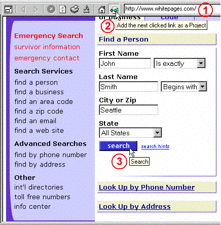

Use the Internal browser to browse to the desired page. Then fill in the blanks of the form.
Before submitting the form, click on the "Add the next clicked link as a Project" button on toolbar (see the screenshot).
Submit the form.
Portable Offline Browser will create a new Project with the form parameters. Download the Project to get the results.
You can use this method not only for downloading search results, but also when logging on to sites that are not directly supported by standard username/password methods.
